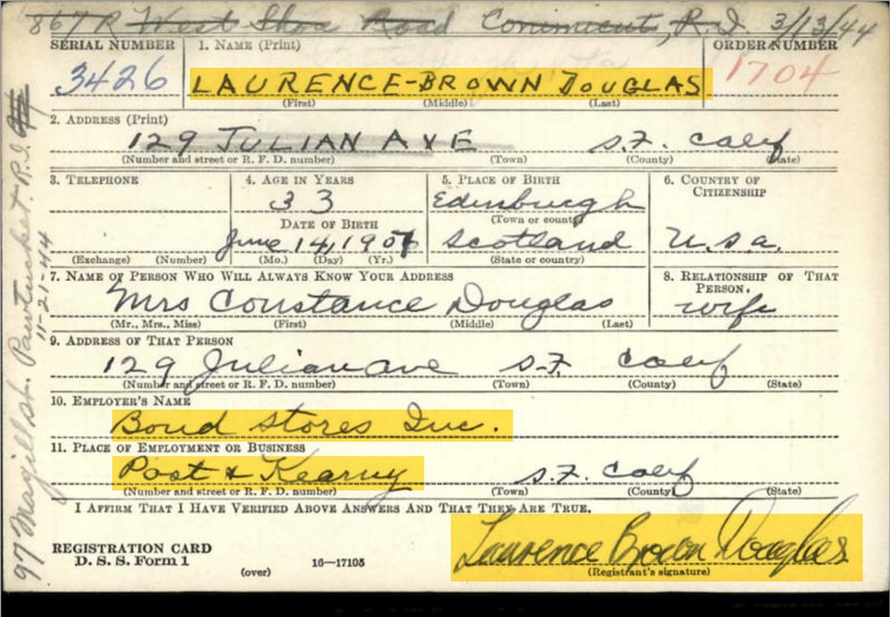

The Names He Carried · Academic Edition
DOC-046: Draft registration card: Laurence Brown Douglas
- Catalog number
- DOC-046
- Title
- Draft registration card: Laurence Brown Douglas
- Date
- October 16, 1940
- Series
- Military and naturalization
- Repository and citation
- World War II draft registration, serial 3426, order 1704, Local Board 94, San Francisco. Via Ancestry.
- Source classification
- Original record (image)
- Information
- Primary for facts the person stated about himself; earlier dates and places secondary.
- Transcription extent
- Full transcription of the document as shown
- People named
- Constance Darcy Douglas
- Places
- Edinburgh, Providence and Pawtucket, San Francisco
- Book chapter
- Chapter 27: San Francisco
- Cold Case File item
- Item 46
Cite this record
Doug Garceau, comp., “Draft registration card: Laurence Brown Douglas,” DOC-046, The Names He Carried: Academic Edition (https://douggarceau.com/the-names-he-carried/archive/items/doc-046.html : accessed [date]); original: World War II draft registration, serial 3426, order 1704, Local Board 94, San Francisco. Via Ancestry.
The document


This copy carries yellow highlighting or red outlining added for the book site. It is not on the original.
The second image is another side of the same document.
Tap an image to open it full size.
Transcription, word for word
Everything as written, including misspellings. [?] marks an uncertain reading. Struck-through words are marked as struck through. Notes in square brackets describe the page and are not part of it.
[FRONT OF CARD] [Written across the top, struck through] 867 R West Shore Road Conimicut, R.I. 3/13/44 SERIAL NUMBER: 3426 [in blue] [Left margin beside the serial number: marks like "##", crossed out] [Faint writing behind the name line, possibly erased pencil, illegible] 1. NAME (Print): LAURENCE-BROWN DOUGLAS (First) (Middle) (Last) ORDER NUMBER: 1704 [in red] 2. ADDRESS (Print): 129 JULIAN AVE [a gray smear after AVE] (Number and street or R. F. D. number) S.F. (Town) [blank] (County) Calif (State) 3. TELEPHONE: [blank] (Exchange) (Number) 4. AGE IN YEARS: 33. DATE OF BIRTH: June 14 1907 [the 7 is heavy; it may be written over another figure] (Mo.) (Day) (Yr.) 5. PLACE OF BIRTH: Edinburgh (Town or county) Scotland (State or country) 6. COUNTRY OF CITIZENSHIP: U.S.A. 7. NAME OF PERSON WHO WILL ALWAYS KNOW YOUR ADDRESS: Mrs Constance Douglas (Mr., Mrs., Miss) (First) (Middle) (Last) 8. RELATIONSHIP OF THAT PERSON: wife 9. ADDRESS OF THAT PERSON: 129 Julian ave (Number and street or R. F. D. number) S.F. (Town) Calif (County) (State) 10. EMPLOYER'S NAME: Bond Stores Inc. 11. PLACE OF EMPLOYMENT OR BUSINESS: Post & Kearny (Number and street or R. F. D. number) S.F. Calif (Town) (County) (State) I AFFIRM THAT I HAVE VERIFIED ABOVE ANSWERS AND THAT THEY ARE TRUE. [Signed] Laurence Brown Douglas (Registrant's signature) REGISTRATION CARD. D. S. S. Form 1 (over) 16—17105 [Written sideways up the left edge] 97 Magill St. Pawtucket R.I. 11-21-44 [and a mark, illegible] [BACK OF CARD, as shown on the copy] RACE: White ✓ | Negro | Oriental | Indian HEIGHT (Approx.): 6- WEIGHT (Approx.): 160 EYES: Blue ✓ | Gray | Hazel | Brown | Black HAIR: Blonde | Red | Brown | Black | Gray | Bald [none ticked on the copy] [A faint leaf-shaped stain between the WEIGHT and HAIR boxes] COMPLEXION: Sallow | Light | Ruddy | Dark | Freckled | Light brown | Dark brown ✓ | Black [The rest of the back is not on the copy]